容器¶
入门¶
谈 Docker 必谈容器（Container），woman简单看看现实世界中容器的概念。
容器是一种基础工具；泛指任何可以用于容纳其他物品的工具，可以部分或完全封闭，被用于容纳、存储、运输物品；物体可以被放置在容器中，而容器则可以保护内容物；
人类使用容器的历史至少有十万年，甚至可能有数百万年的历史；
容器的类型
- 瓶 —— 指口部比腹部窄小、颈长的容器
- 罐 —— 指那些开口较大、一般为近圆筒性的器皿
- 箱 —— 通常是立方体或圆柱体。形状固定
- 篮 —— 以条状物编织而成
- 桶 —— 一种圆柱形的容器
- 袋 —— 柔性材料制成的容器，形状会受内容物而变化
- 瓮 —— 通常是指陶制，口小肚大的容器
- 碗 —— 用来盛载食物的容器
- 柜 —— 指一个由盒组成的家具
- 鞘 —— 用于装载刀刃的容器
概念¶
LXC(LinuX container)¶
虚拟化于容器之间的关系
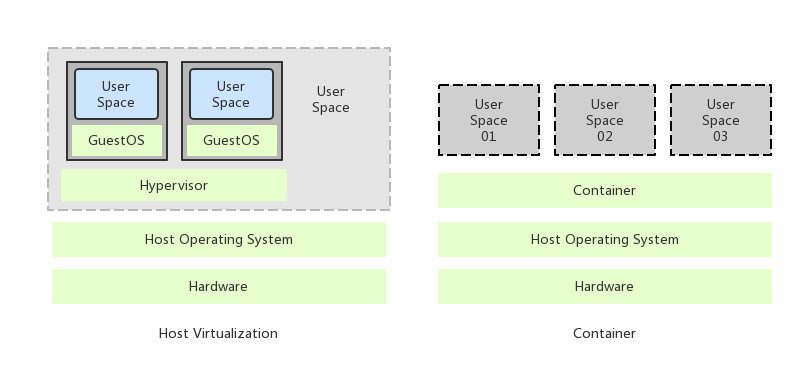虚拟化常见的两种形式：
主机级虚拟化
- Type-I —— 寄生架构
- Type-II —— 裸金属架构
容器级虚拟化
- chroot
- namespace —— 内核级别的环境隔离
- cgroups —— 用户空间的资源分配
chroot¶
chroot 是属于 Unix 系统中的初级虚拟化技术，虚拟的是文件系统的目录结果，用于隔离。chroot 也是最早出现的这类技术，1982 年就有了应用，后来者如 FreeBSD 的 Jail 和 Linux 的 LXC 都是 chroot 的增强，最终还无意引出了 docker 技术。
chroot，即 change root directory。在 Linux 系统中，系统默认的目录结构都是以根（root）开始的。而在使用 chroot 之后，系统的目录结构将以指定的位置作为根目录。
Linux Namespace¶
Linux Namespace 是 Linux 提供的一种内核级别环境隔离的方法。不知道你是否还记得很早之前的 Unix 有一个叫 chroot 的系统调用（通过修改根目录把用户 jail 导一个特定目录下），chroot 提供了一种简单的隔离模式：chroot 内部的文件系统无法访问外部的内容。Linux Namespace 在此基础商，提供了对 UTS、IPC、mount、PID、network、User 等的隔离机制。
举个例子，我们都知道，Linux 下的超级父亲进程的 PID 是 1，所以，同 chroot 一样，如果我们可以把用户的进程空间 jail 到某个进程分支下，并像 chroot 那样让其下面的进程看到的哪个超级父进程的 PID 为 1，于是就可以达到资源隔离的效果了（不同的 PID namespace 中的进程无法看到彼此）。
| 分类 | 系统调用参数 | 隔离内容 | 相关内核版本 |
|---|---|---|---|
| Mount namespace | CLONE_NEWNS | 挂载点（文件系统） | Linux 2.4.19 |
| UTS namespace | CLONE_NEWUTS | 主机名和域名 | Linux 2.6.19 |
| IPC namespace | CLONE_NEWIPC | 信号量、消息队列和共享内存 | Linux 2.6.19 |
| PID namespace | CLONE_NEWPID | 进程编号 | Liunx 2.6.24 |
| Network namespace | CLONE_NEWNET | 网络设备、网络栈、端口等 | 始于 Linux 2.6.24 完成于 Linux 2.6.29 |
| User namespace | CLONE_NAWUSER | 用户和用户组 | 始于 Linux 2.6.23 完成于 Linux 3.8 |
主要是三个系统调用
clone()
实现线程的系统调用，用来创建一个新的进程，并可以通过设计上述参数达到隔离。
unshare()
使某进程脱离某个 namespace
setns()
把某个进程加入到某个 namespace
cgroups¶
- blkio: 块设备IO
- cpu: CPU
- cpuacct: CPU 资源使用报告
- cpuset: 多处理器平台上的 CPU 集合
- devices: 设备访问
- freezer: 挂起或恢复任务
- memory: 内存用量及报告
- perf_event: 对 cgroup 中的任务进行统一性能测试
- net_cls: cgroup 总的任务创建的数据报问的类别标识符
CGroup 是 Control Groups 的缩写，是 Linux 内核提供的一种可以限制、记录、隔离进程组（Process groups）所使用的物理资源（如 CPU Memory I/O 等）的机制。2007 年进入 Linux 2.6.24 内核，CGroups 不是全新创造的，它将进程管理从 cpuset 中剥离出来，作者是 Google 的 Paul Menage。CGroups 也是 LXC 为实现虚拟化所使用的资源管理手段。
CGroup 功能及组成
CGroup 是将任意进程进行分组化管理的 Linux 内核功能。CGroup 本身是提供将进程进行分组化管理的功能和接口的基础结构，I/O 或内存的分配控制等具体的的资源管理功能是通过这个功能来实现的。这些具体的资源管理功能称为 CGroup 子系统或控制器。CGroup 子系统有控制内存的 Memory 控制器、控制进程调度的 CPU 控制器等。运行中的内核可以使用的 CGroup 子系统由 /proc/cgroup 来确认。
CGroup 提供了一个 CGroup 虚拟文件系统，作为进行分组管理和各个子系统设置的用户接口。要使用 CGroup，必须挂载 CGroup 文件系统。这时通过挂载选项指定使用哪个子系统。
CGroup 支持的文件种类
文件名 R/W 用途 Release_agent RW 删除分组时执行的命令，这个文件之存在于根分组 Notify_on_release RW 设置是否执行 release_agent。为 1 时执行 Tasks RW 属于分组的线程TID列表 Cgroup.procs R 属于分组的进程 PID 列表。仅包括多线程进程的线程 leader 的 TID，这点与 tasks 不同 Cgroup.event_control RW 监视状态变化和分组删除事件的配置文件 CGroup 相关概念解释
任务（task）
在 cgroups 中，任务就是系统的一个进程
控制族群（control group）
控制族群就是一组按照某种标准划分的进程。Cgroups 中的资源控制都是以控制族群为单位实现。一个进程可以加入到某个控制族群，也从一个进程组迁移到另一个控制族群。一个进程组的进程可以使用 cgroups 以控制族群为单位分配的资源，同时受到 cgroups 以控制族群为单位设定的限制。
层级（hierarchy）
控制族群就是一组按照某种标准划分的进程。Cgroups 中的资源控制都是以控制族群为单位实现。一个进程可以加入到某个控制族群，也从一个进程组迁移到另一个控制族群。一个进程组的进程可以使用 cgroups 以控制族群为单位分配的资源，同时受到 cgroups 以控制族群为单位设定的限制；
子系统（subsystem）
一个子系统就是一个资源控制器，比如 cpu 子系统就是控制 cpu 时间分配一个控制器。子系统必须附加（attach）到一个层级上才能起作用，一个子系统附加到某个层级以后，这个层级上的所有控制族群都受到这个子系统的控制。
相互关系
- 每次在系统中创建新层级时，该系统中的所有任务都是那个层级的默认 cgroup（我们称之为 root cgroup，此 cgroup 在创建层级时自动创建，后面在该层级中创建的 cgroup 都是此 cgroup 的后代）的初始成员。
- 一个子系统最多智能附加到一个层级
- 一层级可以附加多个子系统
- 一个任务可以是多个 cgroup 的成员，但是这些 cgroup 必须在不同的层级
- 系统中的进程（任务）创建子进程（任务）时，该子任务自动成为其父进程所在 cgroup 的成员。然后可根据需要将该子任务移动到不同的 cgroup 中，但开始时它总是继承其父任务的 cgroup。
Linux container¶
LXC 是最早一批完整的把容器技术用一组简易使用的工具和模版，来极大的简化了容器技术使用的一个方案。
LXC 项目给不同配置和用户空间应用提供最小的容器操作样板来管理容器声明周期，LXC 项目这个特性和 Linux 内核模仿机制能够正常启用。
容器技术将应用从主机操作系统上解耦出来，摘录该程序并且使之在任意支持 LXC 的系统上都实现轻便化。用户在这样一个原始和最小库的 Linux 操作系统上可以在容器里运行任何程序（就像在容器里面运行 LAMP 堆栈）。
因为应用程序和工作量是相对独立的，所以用户可以运行多版本的语言，比如 PHP，Python，Ruby，Apache，这些语言都可以共存，隐藏在容器里。实现云计算，就好比时这些例子和工作量都可以灵活的被移动到别的系统，复制，以及快速配置。
生产 Docker 的目的是为了尽可能减少容器中运行的程序，减少到之运行单个程序，并且通过 Docker 来管理这个程序。
有了 Docker，可以从底层应用程序通过 Docker 来配置，网络，存储和编排。
LXC 用正常操作系统环境回避那个问题，并且因此可以快速兼容所有应用程序和工具，以及任意管理和编制层次，来代替虚拟机。
除此之外，Docker 使用层次，禁用存储持久性。LXC 支持 AUFS 层次和覆盖，对 COW 克隆和用 brtfs、ZFS、LVM Thin 快照广泛支持，并且将选择留给用户。LXC 容器技术里的分散存储时绑定安装的，来为用户到达主机或着另一个容器。
Docker 和 LXC 都设置了一个默认的 NAT 网络。另外，Docker 设置一个端口转发到主机上，就会有一个 -p 标记，比如 -p 80:80 就是 80 从主机转发到容器。有 NAT，本地主机就可以直接通过IP访问容器，外部服务器需要的时候可以通过 IPTable 规则来简单完成，当外部服务被消耗的时候，只需要端口转发就可以。至于为什么需要这么做，原因目前还不是很明确。
要把事项复合起来，Docker 只给了很少的IP和主机文件控制权，所以不能给容器设备静态IP，这对于IP的分配任务来说有点让人疑惑。我们需要使用 --links 标记来链接容器，这个容器中要在被链接的容器中加一个入口在 /etc/ 主机上。
有了 LXC，分配静态IP，动态IP，使用多网络设备就简单多了，可以使用 /etc/hosts 文件，基本上使用 Linux 网络全栈时没有限制的。您希望在主机上链接容器吗？用户使用 GRE，L2TPV3 或者 VXLAN 来快速设置层次，或者使用任意的网络技术。LXC 容器技术可以无缝运行虚拟机运行的一切。
Union Mount¶
Docker 联合文件系统 Union File System，它是实现 Docker 镜像的技术基础，是一种轻量级的高性能分层文件系统中的修改进行提交和层层叠加，这个特性使得镜像可以通过分层实现和继承。同时支持将不同目录挂载到同一个虚拟文件系统下。
在 Docker 镜像分为基础镜像和父镜像，没有父镜像的镜像称为基础镜像。用户是基于基础镜像制作各种不同的应用镜像。这些应用镜像共享一个基础镜像层，提高了存储效率。
当用户通过升级程序到新版本，改变了一个 Docker 镜像时，一个新的镜像层会被创建。因此，用户不用替换郑哥原镜像或者完全重新建立新镜像，只需要添加新层即可。在用户分发镜像的时候，也只需要分发被改动的新层内容（增量部分）。这让 Docker 的镜像管理变得十分轻松和快速。
在 Docker 中使用 AUFS（Another Union File System 或 Advanced Multilayered Unification File System）就是一种联合文件系统。AUFS 不仅可以对每一个目录设定制度（Readonly）、读写（Readwrite）和写（Witeout-able）权限，同时 AUFS 也可以支持分层的机制，例如，可以对只读权限部分逻辑上进行增量的修改而不影响只读部分。
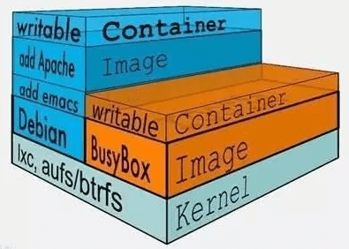当 Docker 在利用镜像启动一个容器时，Docker 镜像将分配文件系统，并且挂载一个新的可读写的层给容器，容器将会在这个文件系统中被创建，并且这个可读写的层被添加到镜像中。Docker 目前支持的联合文件系统种类包括 AUFS、Btrfs、VFS 和 DeviceMapper 等。
AUFS(AnotherUnionFS)
Docker 的 Container 机制和使用是建立在 LXC 基础之上的，然而 LXC 本身存在很多问题，例如难以移动、标准化、模版化、重建、复制等。但这些操作又是 Container 实现快速大规模部署和更新所必备的。
Docker 正是利用AUFS分层技术来实现对 Container 的快速更新和大规模部署，并且在 Docker 中引入了 Storage Driver 技术，实现对外置存储的良好支持。Docker 目前支持 AUFS、VFS、DeviceMapper、对 BTRFS 及 ZFS 引入和支持提供了技术规划。
AUFS 是一种 Union FS，简单来说就是“支持将不同目录挂载到同一个虚拟文件系统下的文件系统”，AUFS 支持为每一个成员目录设定只读（Readonly）、读写（Readwrite）和写（Whiteout-able）权限。Union FS 可以将一个 Readonly 的 Branch 和一个 Writeable 的 Branch 联合在一起挂载在同一个文件系统下。
Live CD 正是基于此可以允许在 OS image 不变的基础上允许用户在其上进行一些写操作。Docker 在 AUFS 上构建的 Container image 也正是如此。
接下来我们从 Linux 启动为例介绍 docker 在 AUFS 特性的运行。前面我们介绍容器演进和技术基础介绍，典型的 Linux 启动到运行需要两个 Filesystem，BootFS 和 RootFS
BootFS 主要包含 Bootloader 和 Kernel，BootLoader 主要是引导加载 Kernel，当 Boot 成功后，Kernel 被加载到内存中 BootFS 就被 Umount 了。
RootFS 包含的就是典型 Linux 系统中 /dev /proc /bin 等标准目录和文件。
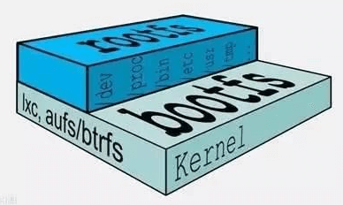不同的Linux发行版，BootFS 基本是一致的，RootFS 会有差别，因此不同的发行版可以共享 BootFS。
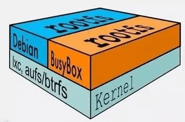Linux 在启动后，首先将 RootFS 设置为 ReadOnly，进行一系列检查后将其切换为 Readwrite 供用户使用。在 Docker 中，也是利用该技术，然后利用 Union Mount 在 Readonly 的 RootFS 文件系统之上挂载 Readwrite 文件系统。并且向上叠加，使得一组 Readonly 和一个 Readwrite 的结构构成一个 Container 的运行目录、每一个被称作一个文件系统 Layer。
AUFS 的特性，使得每一个对 Readonly 层文件/目录的修改都只会存在与上层的 Writeable 层中。这样由于不存在竞争、而且多个 Container 可以共享 Readonly 文件系统层。在 Docker 中，将 Readonly 的层称作“image”镜像。对于 Container 整体而言，整个 RootFS 变的是 read-write 的，但事实上所有的修改都写入最上层的 writeable 层中，image 不保存用户状态，可以用于模版、重建和复制。
在 Docker 中，上层的 Image 依赖下层的 Image，因此 Docker 中把下层的 Image 称作为 父Image，没有父Image 的 Image 称为 base image。因此，想要从一个 image 启动一个 Container，Docker 会先逐次加载其父imgae直到Base image，用户的进程运行在 Writeable 的文件系统层中。所有父Image中的数据信息以及ID、网络和LXC管理的资源限制、具体 Container的配置等，构成一个 Docker 概念上的 Container。
最后我们总结一些 Docker 优势，采用 AUFS 作为 Docker 的 Container 的文件系统，能够提供的优势只有以下几点。
多个 Container 可以共享父Image 存储，节省存储空间；快速部署 —— 如果要部署多个 Container，Base Image 可以避免多次拷贝，实现快速部署。因为多个 Container 共享 Image，提高多个 Container 中的进程命中缓存内容的几率。相比于 Copy-on-write 类型的FS，Base Image 也是可以挂载为 Writeable 的，可以通过更新 Base Image 而一次性更新其之上的 Container。
OCI¶
很多人可能觉得 docker 已经成为了容器的事实标准，那我们以它作为标准问题就解决了。事情并没有那么简单，首先是否表示容器完全等同于 docker，不允许存在其他的容器运行时（比如 coreOS 推出的 rkt）；其次容器上层抽象（容器集群调度，比如 kubernetes、mesos 等）和 docker 紧密耦合，docker 接口的变化将会导致它们无法使用。
总的来说，如果容器以 docker 作为标准，那么 docker 接口的变化将导致社区中所有相关工具都要更新，不然就无法使用；如果没有标准，这将导致容器实现的碎片化，出现大量的冲突和冗余。这两种情况都时社区不愿意看到的事情，OCI（Open Container Initiative）就是在这个背景下出现的，它的使命就是推动容器标准化，容器能运行在任何的硬件和系统上，相关的组件也不必绑定在任何的容器运行时上。
OCI 由 docker、coreos 以及其他容器相关公司创建于 2015 年，目前主要有两个标准文档：容器运行时标准（runtime spec）和容器镜像标准（image spec）。
这两个协议通过 OCI runtime filesystem bundle 的标准格式连接在一起，OCI 镜像可以通过工具转换成 bundle，然后 OCI 容器引擎能够识别这个 bundle 来运行容器。
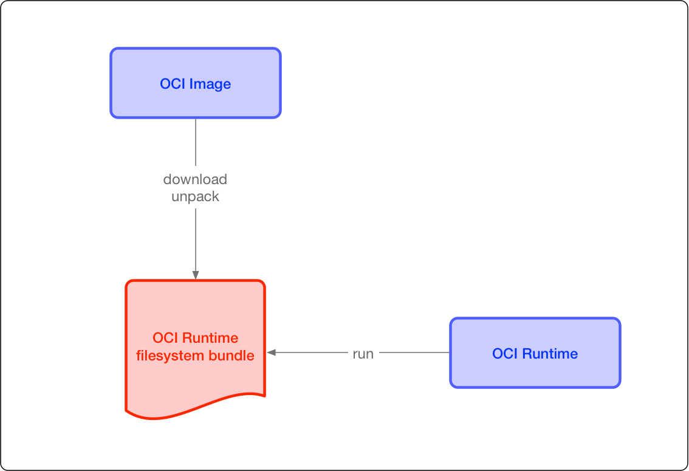image space
OCI 容器镜像主要包括几块内容
文件系统
以 layer 保存的文件系统，每个 layer 保存了和上层之间变化的部分，layer 应该保存那些文件，怎么表示增加、修改和删除的文件等。
config 文件
保存了文件系统的层级信息（每个层级的 hash 值，以及历史信息），以及容器运行时需要的一些信息（比如环境变量、工作目录、命令参数、mount列表），指定了镜像在某个特定平台和系统的配置。比较接近我们使用
docker inspect <image_id>看到的内容。manifest 文件
镜像的 config 文件索引，有哪些 layer，额外的 annotation 信息，manifest 文件中保存了很多和当前平台有关的信息。
index 文件
可选的文件，指向不同平台的 manifest 文件，这个文件能保证一个镜像可以跨平台使用，每个平台拥有不同的 manifest 文件，使用 index 作为索引
runtime spec
OCI 对容器 runtime 的标准主要是指定容器的运行状态，和 runtime 需要提供的命令。下图可以是同容器状态转换图：

init
这个是我自己添加的状态，并不在标准中，表示没有容器存在的初始状态
creating
使用
create命令创建容器，这个过程称为创建中created
容器创建出来，但是还没有运行，表示镜像和配置没有错误，容器能够运行在当前平台
running
容器的运行状态，里面的进程处于 UP 状态，正在执行用户设定的任务
stopped
容器运行完成，或者运行出错，或者
stop命令之后，容器处于暂停状态。这个状态，容器还有很多信息保存在平台中，并没有完全被删除。
Docker¶
总体架构¶
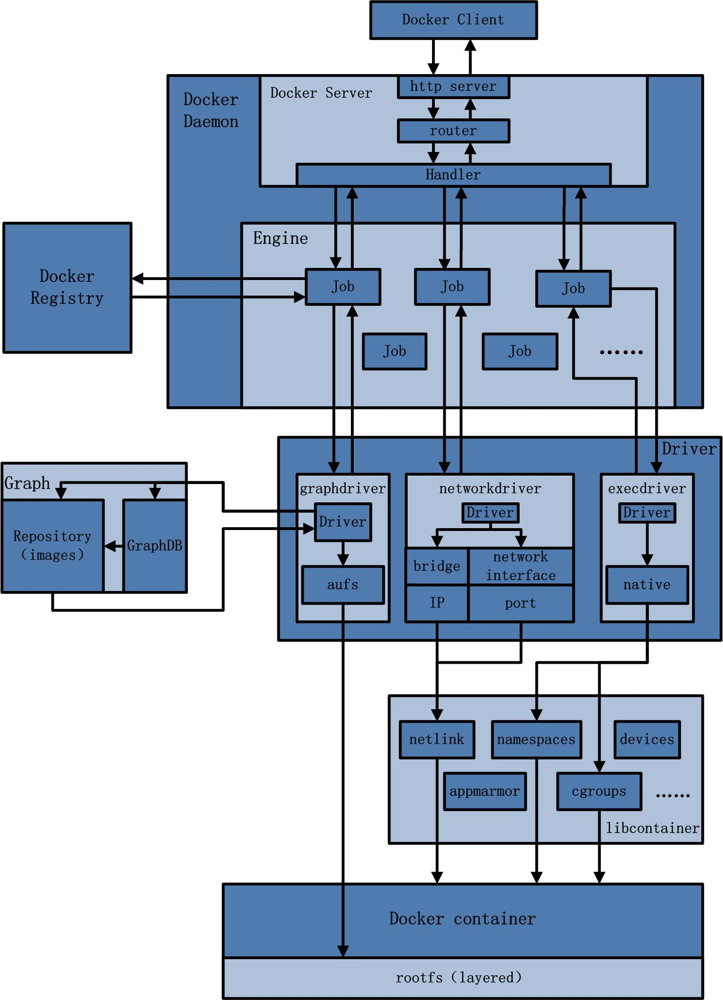docker 是一个 C/S 模式的架构，后端是一个松耦合架构，模块各司其职。
- 用户是使用 Docker Client 与 Docker Daemon 建立通讯，并发送请求给后者。
- Docker Daemon 作为 Docker 架构中的主体部分，首先提供 Server 的功能使其可以接收 Docker Client 的请求。
- Engine 执行 Docker 内部的一系列工作，每一项工作都是以一个 Job 的形式的存在。
- Job 的运行过程中，当需要容器镜像时，则从 Docker Registry 中下载镜像，并通过镜像管理驱动 graphdriver 将下载镜像以 Graph 的形式存储；
- 当需要为 Docker 创建网络环境时，通过网络管理驱动 networkdriver 创建并配置 Docker 容器网络环境；
- 当需要限制 Docker 容器运行资源或执行用户指令等操作时，则通过 execdriver 来完成。
- libcontainer 是一项独立的容器管理包，networkdriver以及execdriver都是通过libcontainer来实现具体对容器进行的操作。
docker Client [发起请求]¶
Docker Client 是和 Docker Daemon 建立通信的客户端。用户使用的可执行文件为 docker（类似可执行脚本的命令），docker 命令后接参数的形式来实现一个完整的请求命令（例如 docker images，docker 为命令可不变，images 为参数可变）。
Docker Client 可以通过以下三种方式和 Docker Daemon 建立通信
tcp://host:portunix://path_to_socketfd://sockerfd
Docker Client 发送容器管理请求后，由 Docker Daemon 接受并处理请求，当 Docker Client 接收到返回的请求响应并简单处理后，Docker Client 一次完整的生命周期就结束了。【一次完整的请求：发送请求→处理请求→返回结果】，于传统的C/S架构请求流程并无不同。
Docker Daemin [后台守护进程]¶
Docker Daemon 的架构图
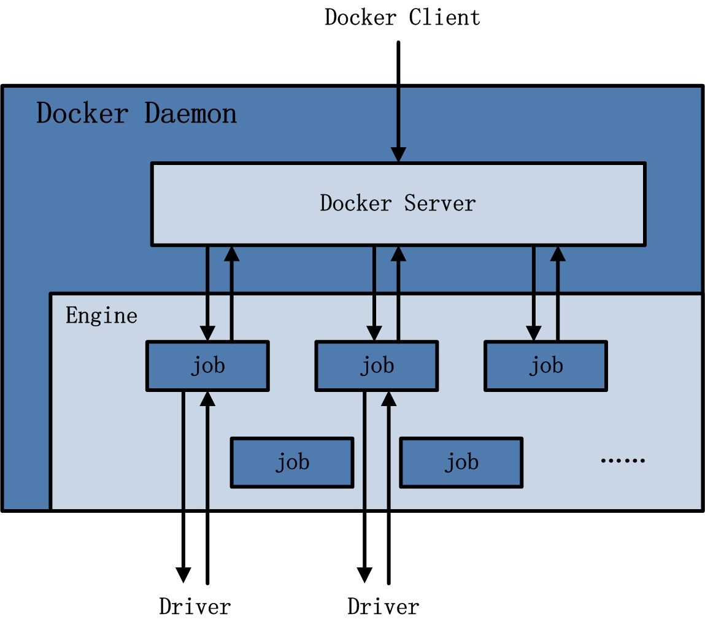
docker Server [调度分发请求]
Docker Server 的架构图
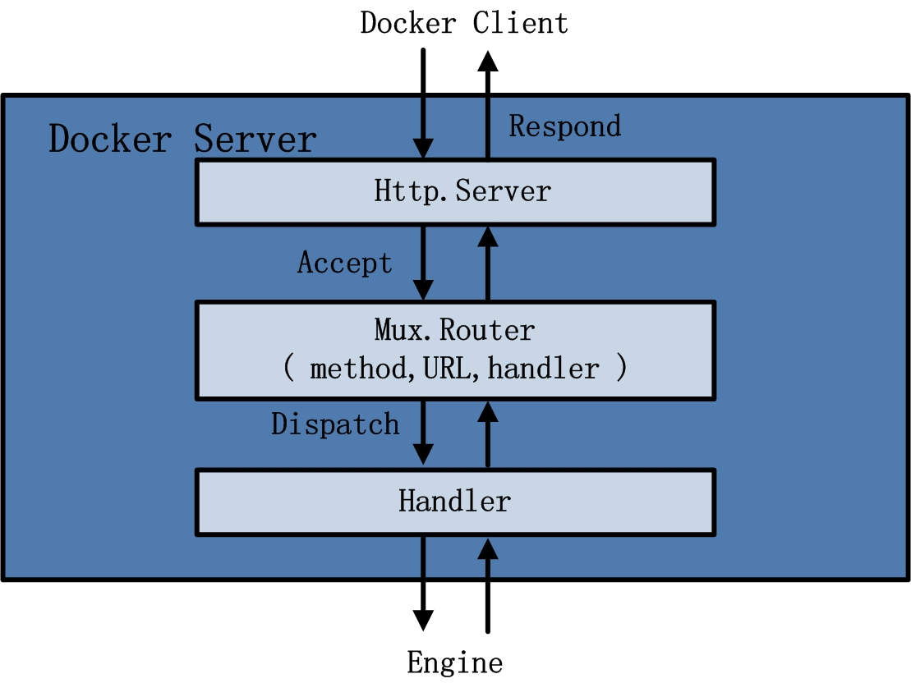
- Docker Server 相当于 C/S 架构的服务端。功能为接收并调度分发 Docker Client 发送的请求。接收请求后，Server 通过路由于分发调度，找到相应的 Handler 并执行请求。
- 在 Docker 启动过程中，通过包 gorilla/mux，创建一个 mux.Router，提供请求的路由功能。在 Golang 中，gorilla/mux 是一个强大的 URL 路由器以及调度分发器。该 mux.Router 中添加了众多的路由项，每一个路由项由 HTTP 请求方法（PUTPOSTGETDELETE）、URL、Handler 三部分组成
- 创建完 mux.Router 之后，Docker 将 Server 的监听地址以及 mux.Router 作为参数，创建一个 httpSrv=http.Server{}，最终执行 httpSrv.Server() 为请求服务。
- 在 Server 的服务过程中，Server 在 Listener 上接受 Docker Client 的访问请求，并创建一个全新的 goroutine 来服务该请求。在 goroutine 中，首先读取请求内容，然后做解析工作，接着找到相应的路由项，随后调用相应的 Handler 来处理该请求，最后 Handler 处理完请求之后回复该请求。
Engine
- Engine 是 Docker 架构中的运行引擎，同时也是 Docker 运行的核心模块。它扮演 Docker container 存储仓库的角色，并且通过执行 job 的方式来操纵管理这些容器。
- 在 Engine 数据结构的设计于实现过程中，有一个 handler 对象。该 handler 对象存储的都是关于众多特定 job 的 handler 处理访问。举例说明，Engine 的 handler 对象中有一项为：
{"create": daemin.ContainerCreate,}，则说明当名为”create“的job在运行是，执行的是 daemon.ContainerCreate 的 handler。
job
- 一个 Job 可以认为是 Docker 架构中 Engine 内部最基本的工作执行单元。Docker 可以做的每一项工作，都可以抽象为一个 job。例如：在容器内部运行一个进程，这是一个 job；创建一个新的容器，这是一个 job。Docker Server 的运行过程也是一个 Job，名为 serverapi。
- Job 的设计者，把 Job 设计的与 Unix 进程相仿。比如说： job 有一个名称，有参数，有环境变量，有标准的输入输出，有错误处理，有返回状态等。
Docker Registry [镜像注册中心]¶
- Docker Registry 是一个存储容器镜像的仓库（注册中心），可以理解为云端镜像仓库，按 repository 来分类，docker pull 按照 [repository]:[tag] 来精确定义一个 image。
- 在 Docker 的运行过程中，Docker Daemon 会与 Docker Registry 通信，并实现搜索镜像、下载镜像、上传镜像三个功能，这三个功能对应的 job 名称分别为 “search”，“pull” 与 “push”
- 可分为公有仓库（docker hub）和私有仓库
Graph [docker 内部数据库]¶
Graph 的架构图
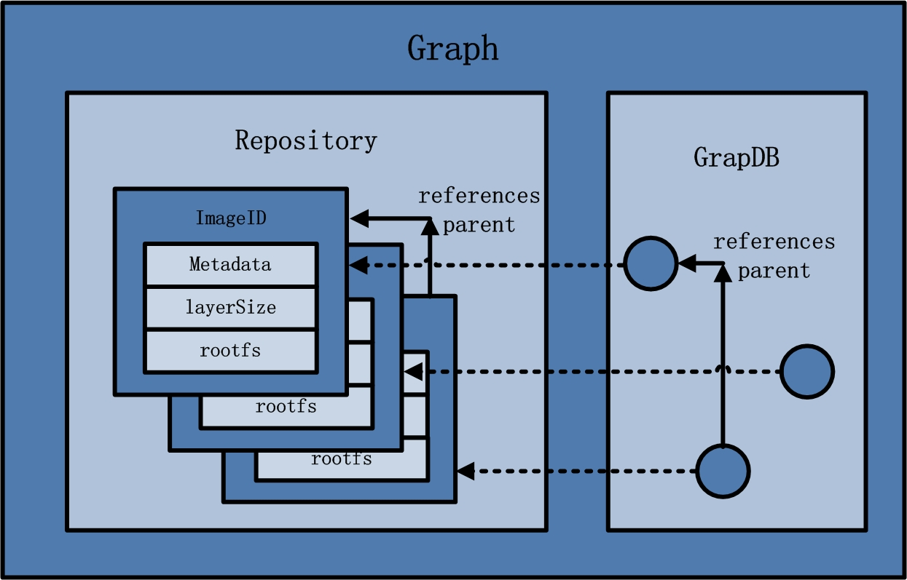
Repository
- 已下载镜像的保管者（包括下载镜像和 dockerfile 构建的镜像）
- 一个 repository 表示某类镜像的仓库（例如 Ubuntu），同一个 repository 内的镜像用 tag 来区分（表示同一类镜像的不同标签或版本）。一个 Registry 包含多个 repository，一个 repository 包含同类型的多个 image。
- 镜像的存储类型有 aufs，devicemapper，Btrfs，vfs 等。其中 centos 系统使用 devicemapper 的存储类型。
- 同时在 Graph 的本地目录中，关于每一个的容器镜像，具体存储的信息有：该容器镜像的元数据，容器镜像的大小信息，以及该容器镜像所代表的具体 rootfs。
GraphDB
- 已下载容器镜像之间关系的记录者。
- GraphDB 是一个构建在 SQLite 之上的小型图形数据库，实现了节点的命名以及节点之间关联关系的记录。
Driver [执行部分]¶
Driver 是 Docker 架构中的驱动模块。通过 Driver 驱动，Docker 可以实现对 Docker 容器执行环境的定制。即 Graph 负责镜像的存储，Driver 负责容器的执行。
graphdriver
graphdriver 架构图
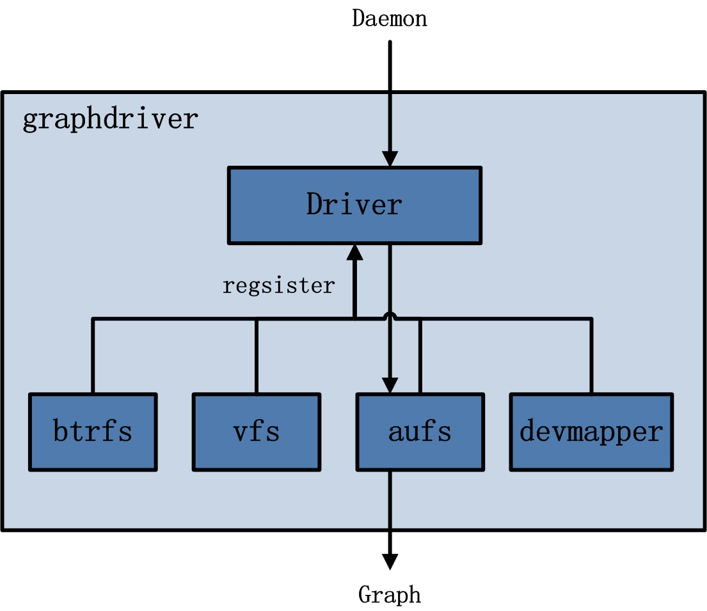
- graphdriver 主要用于完成容器镜像的管理，包括存储与获取。
- 存储：docker pull 下载的镜像由 graphdriver 存储导本地的指定目录（Graph 中）。
- 获取：docker run (create) 用镜像来创建容器的时候由 graphdriver 到本地 Graph 中获取镜像。
networkdriver
networkdriver 的架构图
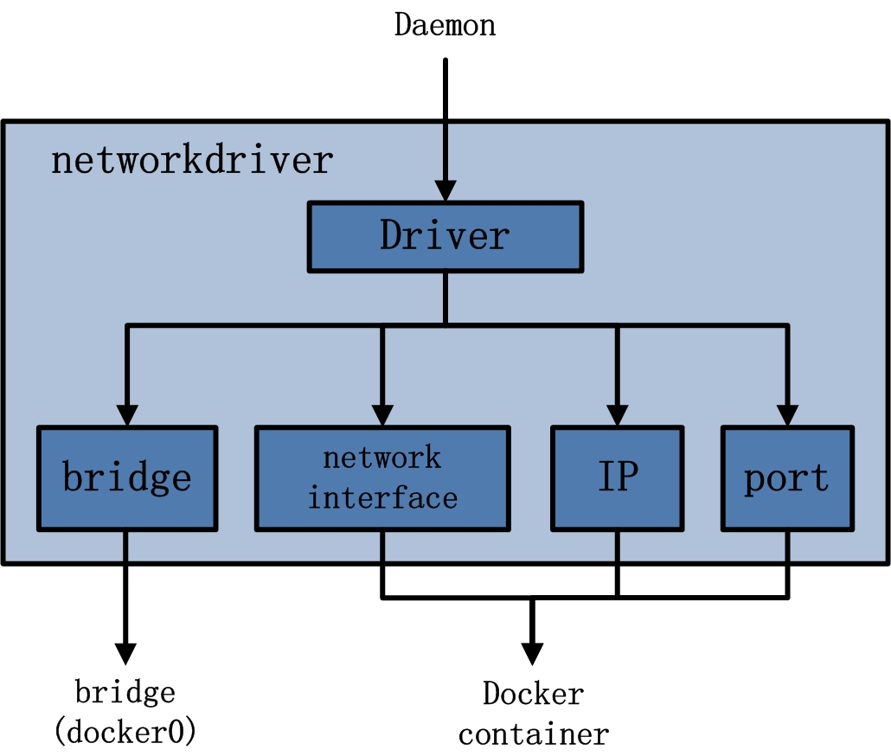
networkdriver 的用途是完成docker容器网络环境的配置，其中包括：
- Docker 启动时为 Docker 环境创建网桥
- Docker 容器创建时为其创建专属虚拟网卡设备
- Docker 容器分配IP、端口并与宿主机做端口映射，设置容器防火墙策略等。
execdriver
execdriver 的结构图
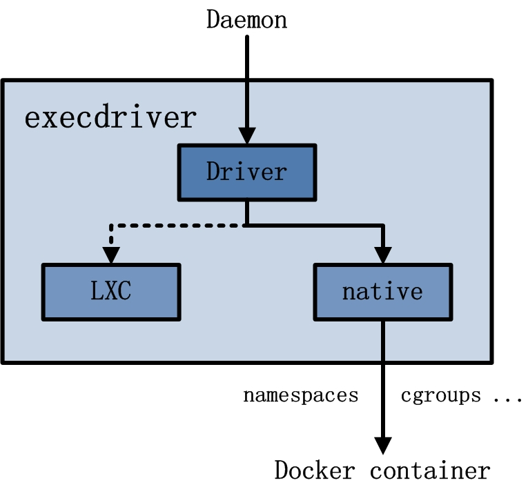
- execdriver 作为 Docker 容器的执行驱动，负责创建容器运行命名空间，负责容器资源使用的统计与限制，负责容器内部进程的真正运行等。
- 现在 execdriver 默认使用 native 驱动，不依赖于 LXC。
libcontainer [函数库]¶
libcontainer 的架构图
- libcontainer 是 Docker 架构中一个使用 Go 语言设计实现的库，设计初衷时希望该库可以不依靠任何依赖，直接访问内核中于容器相关的 API。
- Docker 可以直接调用 libcontainer，而最终操作容器的 namespace、cgroups、apparmor、网络设备以及防火墙规则等。
- libcontainer 提供了一整套标准的接口来满足上层对容器管理的需求。或者说，libcontainer 屏蔽了 Docker 上层对容器的直接管理。
Docker container [服务交付的最终形式]¶
container 架构
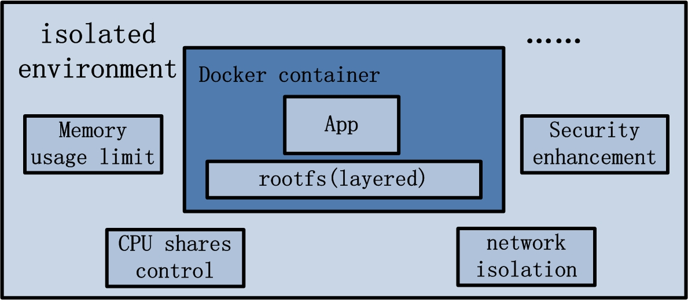
Docker container（Docker 容器）是Docker架构中服务交付的最终体现形式
Docker 按照用户的需求于指令，定制相应的 Docker 容器
- 用户通过指定容器镜像，使得 Docker 容器可以自定义 rootfs 等文件系统
- 用户通过指定计算资源的配额，使得 Docker 容器使用指定的计算资源
- 用户通过配置网络及其安全策略，使得 Docker 容器拥有独立且安全的网络环境
- 用户通过指定运行的命令，使得 Docker 容器执行指定的工作
基础用法¶
安装¶
依赖的基础环境
- 64 bits CPU
- Linux Kernel 3.10+
- Linux Kernel cgroups and namespaces
CentOS 7+
“Extras” repository
不建议通过 CentOS 默认仓库安装 Docker，版本过旧
Docker Daemon
- systemctl start docker.service
个人推荐使用 daocloud 安装 docker，安装方式详见 daocloud 产品中心 docker 安装方式
docker 程序环境¶
docker 环境配置都可以由 /etc/docker/daemon.guess 这个文件所控制。docker 安装后默认没有 daemon.guess 这个配置文件，需要手工创建。
一般情况下，配置文件 daemin.guess 中配置的项目参数，在启动参数中同样适用，有些可能不一样（具体可以查看官方文档），但需要注意的一点，配置文件中如果已经由摸个配置项，则无法在启动参数中增加，会出现冲突的错误。
Attention
如果在 daemon.guess 文件中进行配置，需要 docker 版本高于 1.12.6（在这个版本不生效，1.13.1 以上是生效的）
镜像加速器
// 配置单个 { "registry-mirrors": ["https://registry.docker-cn.com"] } // 配置多个 { "registry-mirrors": ["https://registry.docker-cn.com", "https://docker.mirrors.ustc.edu.cn/"] }日志
log-level 的有效值包括：
- debug
- info
- warn
- error
- fatal
{ "debug": true, "log-level": "info" }监控 Prometheus
https://docs.docker.com/engine/admin/prometheus/#configure-docker
{ "metrics-addr": "127.0.0.1:9323", "experimental": true }保持容器在线
https://docs.docker.com/engine/admin/live-restore/#enable-the-live-restore-option
当 dockerd 进程死掉后，依旧保持容器存活。
{ "live-restore": true }Linux 重载 docker daemon
$ sudo kill -SIGHUP $(pidof dockerd)
设置 镜像、容器、卷 存放目录和驱动
https://docs.docker.com/engine/admin/systemd/#runtime-directory-and-storage-driver
下述两个参数可以单独使用
{ "graph": "/mnt/docker-data", "storage-driver": "overlay" }graph 设置存放目录 —— Docker Root Dir /mnt/docker-data storage-driver 设置存储驱动 —— Storage Driver overlay
user namespace remap
https://docs.docker.com/engine/security/userns-remap/#enable-userns-remap-on-the-daemon
安全设置：用户空间重映射
userns-remap 的值可以是 如果值字段 只有 一个值，那么该字段表示组。如果需要同时指定 用户和组，需要使用 冒号 分割，格式为 用户:组
组
用户:组
组 或 用户 的值可以是组或用户的 名称 或 ID
- testuser
- testuser:testuser
- 1001
- 1001:1001
- testuser:1001
- 1001:testuser
{ "userns-remap": "testuser" } // 或同时指定 用户和组，且使用 名称和ID { "userns-remap": "testuser:1001" }$ dockerd --userns-remap="testuser:testuser"
Note
userns-remap 使用不多，但并不是不重要。目前不是默认启用的原因时因为一些应用会假定 uid 0 的用户拥有特殊能力，从而导致假定失败，然后报错退出。所以如果要启用 user id remap，你要充分测试一下。但是启用 uid remap 的安全性提高是明显的。
配置完成后我们可以通过命令 docker info 查看 docker 详细信息
常用操作¶
| command | content | subobject | subobject content |
|---|---|---|---|
| config | Manage Docker configs | create | Create a configuration file from a file or STDIN as content |
| inspect | Display detailed information on one or more configuration files | ||
| ls | List configs | ||
| rm | Remove one or more configuration files | ||
| container | Manage container | attach | Attach local standard input, output, and error streams to a running container |
| commit | Create a new image from a container’s changes | ||
| cp | Copy files/folders between a container and the local filesystem | ||
| create | Create a new container | ||
| diff | Inspect changes to files or directories on a container’s filesystem | ||
| exec | Run a command in a running container | ||
| export | Export a container’s filesystem as a tar archive | ||
| inspect | Display detailed information on one or more containers | ||
| kill | Kill one or more running containers | ||
| logs | Fetch the logs of a container | ||
| ls | List containers | ||
| pause | Pause all processes whitin one or more containers | ||
| port | List port mappings or a specific mapping for the container | ||
| prune | Remove all stopped containers | ||
| rename | Rename a container | ||
| restart | Restart one or more containers | ||
| rm | Remove one or more container | ||
| run | Run a command in a new container | ||
| start | Start one or more stopped containers | ||
| stars | Display a live stream of container(s) resource usage statistics | ||
| stop | Stop one or more running containers | ||
| top | Display the running processes of a containers | ||
| unpause | Unpause all processes within one or more containers | ||
| update | Update configuration of one or more containers | ||
| wait | Block until one or more containers stop, then print their exit codes | ||
| image | Manage images | build | Build an image from Dockerfile |
| history | Show the history of an image | ||
| import | Import the containers from a tarball to create a filesystem image | ||
| inspect | Display detailed information on onw or more images | ||
| load | Load an image from a tar archive or STDIN | ||
| ls | List images | ||
| prune | Remove unused images | ||
| pull | Pull an image or a repository from a registry | ||
| push | Push an image or a repository to a registry | ||
| rm | Remove one or more images | ||
| save | Save one or more images to a tar archive (streamed to STDOUT by default) | ||
| tag | Create a tag TARGET_IMAGE that refers to SOURCE_IMAGE | ||
| network | Manage networks | connect | Connect a container to a network |
| create | Create a network | ||
| disconnect | Disconnect detailed information on one or more networks | ||
| inspect | Display detailed information on one or more networks | ||
| ls | List networks | ||
| prune | Remove all unused networks | ||
| rm | Remove one or more networks | ||
| node | Manage Swarm node | deamon | Demote one or more nodes from manager in the swarm |
| inspect | Display detailed information on one or more nodes | ||
| ls | List nodes in the swarm | ||
| promote | Promote one or more nodes to manager in the swarm | ||
| ps | List tasks running on one or more nodes, defaults to current node | ||
| rm | Remove one or more nodes from the swarm | ||
| update | Update a node | ||
| plugin | Manage plugins | create | Create a plugin from a rootfs and configuration. Plugin data directory must contain config.json and rootfs directory. |
| disable | Disable a plugin | ||
| enable | Enable a plugin | ||
| inspect | Display detailed information on one or more plugins | ||
| install | Install a plugin | ||
| ls | List plugins | ||
| push | Push a plugin to a registry | ||
| rm | Remove one or more plugin | ||
| set | Change settings for a plugin | ||
| upgrade | Upgrade an existing plugin | ||
| secret | Manage Docker secrets | create | Create a secret from a file or STDIN as content |
| inspect | Display detailed information on onw or more secrets | ||
| ls | List secrets | ||
| rm | Remove one or more secrets | ||
| service | Manage service | create | Create a new service |
| inspect | Display detailed information on one or more services | ||
| logs | Fetch the logs of a service or task | ||
| ls | List services | ||
| ps | List the tasks of one or more services | ||
| rm | Remove one or more services | ||
| rollback | Revert changes to a service’s configuration | ||
| scale | Scale one or multiple replicated services | ||
| update | Update a service | ||
| stack | Manage Docker stacks | create | Create a new service |
| inspect | Display detailed information on one or more services | ||
| logs | Fetch the logs of a service or task | ||
| ls | List services | ||
| ps | List the tasks of one or more services | ||
| rm | Remove one or more services | ||
| rollback | Revert changes to a service’s configuration | ||
| scale | Scale one or multiple replicated services | ||
| update | Update a services | ||
| swarm | Manage Swarm | ca | Display and rotate the root CA |
| init | Initialize a swarm | ||
| join | Join a swarm as a node and/or manager | ||
| join-token | Manager join tokens | ||
| leave | Leave the swarm | ||
| unlock | Unlock swarm | ||
| unlock-key | Manage the unlock key | ||
| update | Update the swarm | ||
| system | Manage Docker | df | Show docker disk usage |
| events | Get real time events from the server | ||
| info | Display system-wide information | ||
| prune | Remove unused data | ||
| trust | Manage trust on Docker images (experimental) | key | Manage keys for signing Docker images (experimental) |
| signer | Manage entities who can sign Docker images (experimental) | ||
| inspect | Return low-level information about keys and signatures | ||
| revoke | Remove trust for an image | ||
| sign | Sign an image | ||
| view | Display detailed information about keys and signatures | ||
| volume | Manage volumes | create | Create a volume |
| inspect | Display detailed information on one or more volumes | ||
| ls | List volumes | ||
| prune | Remove all unused volumes | ||
| rm | Remove one or more volumes |
状态转换¶

网络模式¶
当你开始大规模使用 Docker 时，你会发现需要了解很多关于网络的知识。Docker 容器需要运行在一台宿主机上，可以是一台物理机（on-premise 数据中心的裸金属服务器），也可以是 on-prem 或云上的一台虚拟机。
简单的 Docker 架构¶
宿主机和容器的关系是 1:N ，这意味着一台宿主机上可以运行多个容器。例如，从 Facebook 的报告来看，取决于机器的能力，每台宿主机上平均可以运行 10 到 40 个容器。另一个数据是：在 Mesosphere，我们发现，在裸金属服务器上的各种负载测试中，每台宿主机上不超过 250 个容器是可能的。
无论你是在单主机上进行部署，还是在集群上部署，你总得和网络打交道：
- 对于大多数单主机部署来说，问题归结于是使用共享卷进行数据交换，还是使用网络（基于 HTTP 或者其他的）进行数据交换。尽管 Docker 数据卷很容易使用，但也引入了紧耦合，这意味着很难将单主机部署转换为多主机部署。自然地，共享卷的优势是速度。
- 在多主机部署中，你需要考虑两个方面：单主机上的容器之间如何通信和多主机之间的通信路径是怎样的。性能考量和安全方面都有可能影响你的设计决定。多主机部署通常是很有必要的，原因是单主机的能力有限，也可能是因为需要部署分布式系统，例如 Apache Spark、HDFS 和 Cassandra。
Note
分布式系统的数据本地化（Distributed Systems and Data Locality）
使用分布式系统（计算或存储）的基本想法是想从并行处理中获利，通常伴随着数据本地化。数据本地化，我指的是将代码转移到数据所在地的原则，而不是传统的、其他的方式。考虑以下的场景：如果你的数据集是 TB 级的，而代码是 MB 级的，那么在集群中移动代码此传输 TB 级数据更高效。除了可以并行处理数据之外，分布式系统还可以提供容错性，因为系统中的一部分可以相对独立地工作。
简单的说，Docker 网络是原生的容器 SDN 解决方案。总而言之，Docker 网络有四种模式：桥接模式，主机模式，容器模式和无网络模式。我们会详细地讨论主机上的各种网络模式。
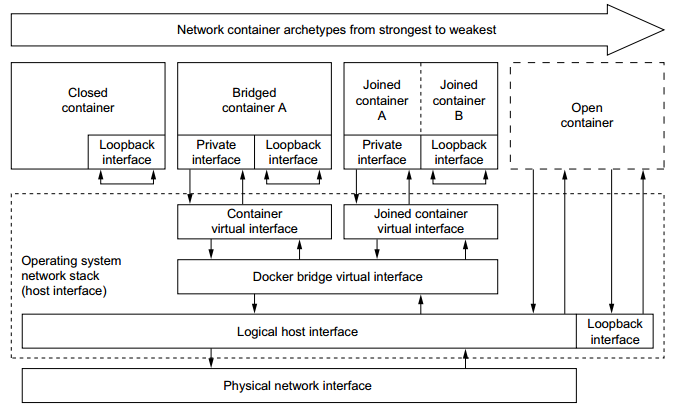$ docker network ls
NETWORK ID NAME DRIVER SCOPE
94bb253e0ddc bridge bridge local
59d9038bfac5 host host local
920274f49a70 none null local
bridge 模式网络¶
在该模式中，docker 守护进程创建了一个虚拟以太网桥 docker0 ，附加在其上的任何网卡之间都能自动转发数据包。默认情况下，守护进程会创建一对对等接口，将其中一个接口设置为容器的 eth0 接口，另一个接口放置在宿主机的命名空间中，从而将宿主机上的所有容器都链接到这个内部网络上。同时，守护进程还会从网桥的似有地址空间中分配一个IP地址和子网给该容器。
$ docker container run --name=web01 --detach --publish-all --net=bridge nginx:1.14-alpine
$ docker container ps
CONTAINER ID IMAGE COMMAND CREATED STATUS PORTS NAMES
7f056ef642b7 nginx:1.14-alpine "nginx -g 'daemon ..." 6 seconds ago Up 4 seconds 0.0.0.0:32768->80/tcp web01
$ docker container inspect web01
...
"NetworkSettings": {
"Bridge": "",
"SandboxID": "56cb1f03f8eda8c1ce73a764eb36794cd87dbf3cae399d2220b623b1f711678a",
"HairpinMode": false,
"LinkLocalIPv6Address": "",
"LinkLocalIPv6PrefixLen": 0,
"Ports": {
"80/tcp": [
{
"HostIp": "0.0.0.0",
"HostPort": "32768"
}
]
},
"SandboxKey": "/var/run/docker/netns/56cb1f03f8ed",
"SecondaryIPAddresses": null,
"SecondaryIPv6Addresses": null,
"EndpointID": "11ede3c1709ded6a68dd5c4a4607feb5eec780534a8882580b9bc30c79c14b7a",
"Gateway": "172.17.0.1",
"GlobalIPv6Address": "",
"GlobalIPv6PrefixLen": 0,
"IPAddress": "172.17.0.2",
"IPPrefixLen": 16,
"IPv6Gateway": "",
"MacAddress": "02:42:ac:11:00:02",
"Networks": {
"bridge": {
"IPAMConfig": null,
"Links": null,
"Aliases": null,
"NetworkID": "94bb253e0ddcd0f2f7b0037bc51c537d2bdcd5d5a156963fbf1c611c37ae807d",
"EndpointID": "11ede3c1709ded6a68dd5c4a4607feb5eec780534a8882580b9bc30c79c14b7a",
"Gateway": "172.17.0.1",
"IPAddress": "172.17.0.2",
"IPPrefixLen": 16,
"IPv6Gateway": "",
"GlobalIPv6Address": "",
"GlobalIPv6PrefixLen": 0,
"MacAddress": "02:42:ac:11:00:02",
"DriverOpts": null
}
}
}
...
查看 bridge 网桥与容器的接口
$ yum -y install bridge-utils
$ brctl show
bridge name bridge id STP enabled interfaces
docker0 8000.02428b0967f8 no veth20f8faa
因为 bridge 模式是 Docker 的默认设置，所以你也可以使用 docker container run --detach --publish-all --name=web01 nginx:1.14-alpine 。如果你没有使用 –publish-all（发布该容器暴露的所有端口）或者 –publish host_port:container_port（发布某个特定的端口），IP 数据包就不能从宿主机之外路由到容器中。

host 模式¶
该模式将禁用 Docker 容器的网络隔离。因为容器共享了宿主机的网络命名空间，直接暴露再公共网络之中。因此，你需要通过端口映射（port mapping）来进行协调。
$ docker container run --detach --name=web01 --publish-all --net=host nginx:1.14-alpine
882db350e02b9922bd911ce9d1b08cfc085cc7baf1dee2a75fbfeae1fae12cfd
$ ip addr | grep -A 2 eth0:
2: eth0: <BROADCAST,MULTICAST,UP,LOWER_UP> mtu 1500 qdisc pfifo_fast state UP group default qlen 1000
link/ether d0:0d:b5:97:40:9f brd ff:ff:ff:ff:ff:ff
inet 172.19.135.14/24 brd 172.19.135.255 scope global dynamic eth0
$ docker container ps
CONTAINER ID IMAGE COMMAND CREATED STATUS PORTS NAMES
c5a4c0105f22 nginx:1.14-alpine "nginx -g 'daemon ..." About a minute ago Up About a minute web01
我们进入容器内部查看网卡信息
# docker container exec --interactive --tty web01 /bin/sh
/ # ip a
1: lo: <LOOPBACK,UP,LOWER_UP> mtu 65536 qdisc noqueue state UNKNOWN qlen 1
link/loopback 00:00:00:00:00:00 brd 00:00:00:00:00:00
inet 127.0.0.1/8 scope host lo
valid_lft forever preferred_lft forever
inet6 ::1/128 scope host
valid_lft forever preferred_lft forever
2: eth0: <BROADCAST,MULTICAST,UP,LOWER_UP> mtu 1500 qdisc pfifo_fast state UP qlen 1000
link/ether d0:0d:b5:97:40:9f brd ff:ff:ff:ff:ff:ff
inet 172.19.135.14/24 brd 172.19.135.255 scope global dynamic eth0
valid_lft 314753218sec preferred_lft 314753218sec
inet6 fe80::d20d:b5ff:fe97:409f/64 scope link
valid_lft forever preferred_lft forever
3: docker0: <NO-CARRIER,BROADCAST,MULTICAST,UP> mtu 1500 qdisc noqueue state DOWN
link/ether 02:42:8b:09:67:f8 brd ff:ff:ff:ff:ff:ff
inet 172.17.0.1/16 scope global docker0
valid_lft forever preferred_lft forever
inet6 fe80::42:8bff:fe09:67f8/64 scope link
valid_lft forever preferred_lft forever
/ # exit
我们可以从上例中看到：容器和宿主机具有相同的IP地址 172.19.135.14
在下图中我们可以看到：当使用 host 模式网络时，容器实际上继承了宿主机的IP地址。该模式比 bridge 模块更快（因为没有路由开销），但是它将容器直接暴露在公共网络中，是有安全隐患的。

container 模式网络¶
该模式会重用另一个容器的网络名称空间。通常来说，当你想要自定网络栈时，该模式时很有用的。实际上，该模式也是 Kubernetes 使用的网络模式。
# docker container run --detach --publish-all --net=bridge --name=web01 nginx:1.14-alpine
07d43ffe5f341cb10a46c3be9c71a05ffa5b5004aedb38a6cc975705855b8dd9
# docker ps
CONTAINER ID IMAGE COMMAND CREATED STATUS PORTS NAMES
07d43ffe5f34 nginx:1.14-alpine "nginx -g 'daemon ..." 7 seconds ago Up 6 seconds 0.0.0.0:32769->80/tcp web01
# docker exec --tty --interactive web01 ip addr
1: lo: <LOOPBACK,UP,LOWER_UP> mtu 65536 qdisc noqueue state UNKNOWN qlen 1
link/loopback 00:00:00:00:00:00 brd 00:00:00:00:00:00
inet 127.0.0.1/8 scope host lo
valid_lft forever preferred_lft forever
6: eth0@if7: <BROADCAST,MULTICAST,UP,LOWER_UP,M-DOWN> mtu 1500 qdisc noqueue state UP
link/ether 02:42:ac:11:00:02 brd ff:ff:ff:ff:ff:ff
inet 172.17.0.2/16 scope global eth0
valid_lft forever preferred_lft forever
# docker run --interactive --tty --net=container:web01 ubuntu:14.04 ip addr
1: lo: <LOOPBACK,UP,LOWER_UP> mtu 65536 qdisc noqueue state UNKNOWN group default qlen 1
link/loopback 00:00:00:00:00:00 brd 00:00:00:00:00:00
inet 127.0.0.1/8 scope host lo
valid_lft forever preferred_lft forever
6: eth0@if7: <BROADCAST,MULTICAST,UP,LOWER_UP> mtu 1500 qdisc noqueue state UP group default
link/ether 02:42:ac:11:00:02 brd ff:ff:ff:ff:ff:ff
inet 172.17.0.2/16 scope global eth0
valid_lft forever preferred_lft forever
结果显示：第二个容器使用 --net=container 参数，因此和第一个容器 web01 具有相同的ip地址 172.17.0.2
none 模式网络¶
该模式将容器放置在它自己的网络中，但是并不进行任何配置。实际上，该模式关闭了容器的网络功能，在以上两种情况下时有用的：容器并不需要网络（例如只需要写磁盘卷的批处理任务）；你希望自定义网络。
# docker container run --detach --publish-all --net=none nginx:1.14-alpine
90e19ccb6938b12c366022411a93f25ecb05a7f6b49dd640bb5a0703068076ab
# docker ps
CONTAINER ID IMAGE COMMAND CREATED STATUS PORTS NAMES
90e19ccb6938 nginx:1.14-alpine "nginx -g 'daemon ..." 12 seconds ago Up 10 seconds gracious_bartik
# docker container inspect gracious_bartik | grep IPAddress
"SecondaryIPAddresses": null,
"IPAddress": "",
"IPAddress": "",
在上面的例子中可以看到，恰如我们所料，网络没有任何配置。
其他网络话题¶
分配IP地址
频繁大量的创建和销毁容器时，手动分配IP地址是不能接受的。bridge 模式可以在一定程度上解决这个问题。为了防止本地网络上的 ARP 冲突，Docker Daemon 会根据分配的IP地址生成一个随机的 MAC 地址。
分配端口
你会发现有两大阵营：固定端口分配（fixed-port-allocation）和动态端口分配（dynamically-port-allocation）。每个服务或者应用可以有各自的分配方法，也可以是作为全局的策略，但是你必须做出自己的判断和决定。请记住，bridge 模式中，Docker 会自动分配 UDP 或 TCP 端口，并使其可路由。
网络安全
Docker 可以开启容器间通信（意味着默认配置
--icc=true），也就是说，宿主机上的所有容器可以不接受任何限制地相互通讯，这可能导致拒绝服务攻击。进一步地，Docker 可以通过--ip_forward和--iptables两个选项控制容器间、容器和外部世界的通信。你应该了解这些选项的默认值，并让网络组根据公司策略设置 Docker 进程。另一个网络安全方面是线上加密（on-the-wire encryption），通常是指 RFC 5246 中定义的 TLS/SSL。
跨主机网络¶
在微服务架构中，多个服务是通过服务注册中心进行管理的，服务需要将自己的IP地址和端口发送给注册中心，这样该服务才能被其他服务感知并调用。但是当服务在 docker 容器内运行时，服务获取到的自身IP是宿主机分配的内部IP（默认情况下会在 172.17.0.0/16 子网下），如 172.17.0.1 这个地址只能在宿主机内部使用（通过 docker0 网桥转发），其他的主机是无法 ping 通地。我们就以服务注册的场景讨论 docker 容器跨主机通信方案。
端口映射
启动容器时通过 -p 参数将容器内服务监听的端口映射到主机端口中。例如容器运行的 web 服务监听 8080 端口，那么当指定 -p 8080:80 时，外部就可以通过访问宿主机的 80 端口访问到这个 web 服务了。
这种方式有一个很大的缺点：服务器端口是一种稀缺资源，一台主机往往会运行多个容器，它们之间很可能会出现端口冲突的情况，而且就服务注册这个场景而言，容器内的 web 服务是无法主动得到宿主机的ip地址的，因此需要我们在启动容器时通过 Dockerfile 将宿主机IP通过环境变量注入到容器中，然后配置 web 项目使用我们指定的 IP 来注册自身。这种方式显然无法应用于大规模集群部署。
不进行网络隔离，直接使用宿主机网络配置
通过 –net=host 参数可以指定使用该模式。在这种模式下，容器的网络环境并没有通过 Linux 内核的 Network Namespace 进行隔离，在容器内可以自由修改宿主机的网络参数，因此是不安全的，但优点是网络性能损失可以忽略不计。对于我们的场景来说，微服务能够想直接部署一样征程获取到主机IP。
组件 overlay 网络
Overlay 网络其实就是隧道技术，即将一种网络协议包装在另一种协议中传输的技术。Docker 常见的 overlay 网络实现有 flannel，swarm overlay，Open vSwitch 等。它们的工作流程基本都是一样的：通过某种方式保证所有 docker 容器都有全局唯一的 IP，然后把 docker 容器的ip和其他所在宿主机ip的对应关系存放到第三方存储服务中（如 etcd，consul），之后通过在宿主机上修改路由表、创建虚拟网卡的方式，将数据包转发到目标容器所在的宿主机上，最后再由目标宿主机的 docekr0 网桥转发给容器。对 flannel 来说，它的工作原理如下：
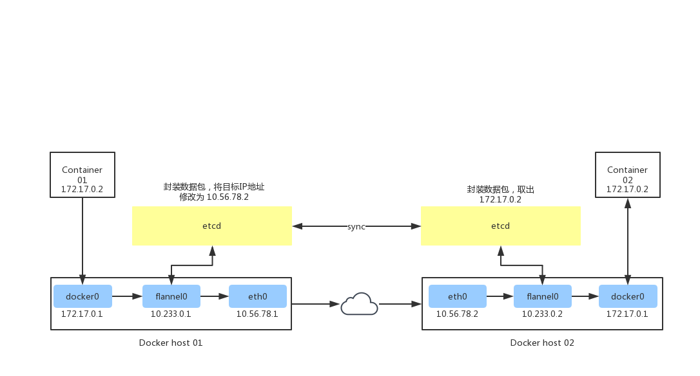10.56.78.1 和 10.56.78.2 是局域网内的两台物理机，它们各运行着container01和container02。当container01要访问container02时：
- 数据包首先到达 docker0，由于 flannel 修改了路由表，docker0 会将其转发给 flannel0
- flannel 的守护进程 flanneld 会持续监听flannel 转出的数据包，它首先会到 etcd 中查询 container01 所在的宿主机的 IP(10.56.78.1)，然后将原数据包进行封装（可以使用 UDP 或 vxlan 封装），把目的的IP地址改为对方宿主机IP并交由 eth0
- etcd 将新数据包通过网络发到 10.56.78.2
- 10.56.78.2 的 eth0 收到数据包后转发给 flannel0，由守护进程 flanneld 进行解包，取出原数据包，得到容器IP地址 172.17.0.2，然后转发给 docker0
- docker0 将数据包转发至容器进程对应端口
至此 container01 就实现了跨主机访问 container02。
oberlay 网络的性能损耗取决于其实现方式，经测试，flannel(vxlan模式)，swarm overlay 实现的损耗几乎与端口映射持平，但是 docker 1.12 版本新加入的 swarm overlay 实现性能损耗高达 60%（swarm overlay 代码实现质量不高）。因此，在生产环境中不建议使用 swarm overlay 方案。
Calico 和 Weave
这两种实现的方式跟 overlay 不太一样，它会把每台宿主机都当成一个路由器使用，数据包在各个主机之间流动最终被投递到目标主机。为了让主机支持路由功能，它们会向路由表中写入大量记录，因此如果集群中的节点太多，路由表记录数过高（超过1万）时性能会出现问题。
虽然实现原理一样，但它们的性能区别还是很大的，Calico 因为使用的是内核特性，能做到在内核态完成路由，因此性能于原生网络非常接近（90%以上），而 Weave 则是在用户态转发数据包，性能比较差，损耗高达 70% 以上。
总结
overlay 方案和 Calico，Weave 由于可以实现容器IP的直接通信，因此在服务注册的场景下都可以正常运行，到那时需要付出一定的性能代价。而端口映射方式则需要强行配置我们的应用使用指定IP，灵活性极差，只适用于小规模的集群部署。而 host 模式则是通过牺牲隔离性来换取最大化网络性能。在实际应用中我们应该根据业务特点来选择最适合的网络方案。